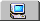
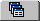
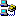
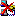

Die Verwaltung umfasst 5 Bereiche:
» Dateimanager
» Projektmanager
» Direktes FTP
» Farb - Palette
» Sonderzeichen - Auswahl

Mit Hilfe des Dateimanagers können Sie durch Verzeichnisse auf Ihrem System browsen. Der Dateimanager ist nützlich, wenn Sie keine Projekte anlegen oder nur schnell einige Dateien bearbeiten wollen.
Die Dateiliste enthält die Dateien des aktuell gewählten Verzeichnisses. Per Doppelklick können Dateien geöffnet werden. Über das Kontextmenü (rechte Maustaste) sind Funktionen wie und abrufbar.
Auch die Einträge und finden Sie hier. Damit können Sie Dateien zwischen dem Datei- und Projektmanager hin- und herkopieren. Wählen Sie dazu eine oder mehrere Dateien aus und klicken Sie auf . Wechseln Sie dann zum Projektmanager und fügen Sie die Dateien mit ein.

Mit Hilfe von Projekten können Sie zusammengehörige Dateien ordnen, um den Überblick zu behalten. So ist es einfacher, die Daten später auf einen » Server zu übertragen. Projekte können unter dem Menüpunkt erstellt werden.
Das Kontextmenü der Projektansicht enthält Einträge wie beispielsweise und .
Auch hier finden Sie eine Dateiliste. Sie enthält dieselben Funktionen wie die des » Dateimanagers.
Mit Hilfe von FTP (File Transfer Protocol) können Sie ihre Homepage auf einem » Server verfügbar machen. So kann jeder Internet - Benutzer Ihre Seiten aufrufen.
Die FTP - Funktionen von Scribe! sind direkt in die Verwaltung integriert. Das ist übersichtlicher und vor allem für Anfänger angenehmer. Trotzdem ist das "Direkte FTP" genauso umfangreich wie ein externes FTP - Programm.
Ganz oben sehen Sie eine Auswahlbox, die die verschiedenen Profile enthält. Wie Sie unter FTP - Profile anlegen, lesen Sie » hier. Wenn Sie ein Profil auswählen und auf  klicken, verbindet sich Scribe! mit dem Server.
Wenn Sie sich zum ersten Mal verbinden, sehen Sie vermutlich noch nichts in den beiden Ansichten. Daher sollten Sie zunächst einmal einige Dateien auf den Server kopieren. Wechseln Sie dazu bitte zum Datei- oder Projektmanager, markieren die gewünschten Dateien und Sie sie per Kontextmenü. Dann gehen Sie zurück zum "Direkten FTP" und rufen Sie per Kontextmenü der unteren Ansicht den Befehl auf. Die Dateien werden nun kopiert.
Natürlich können mit Hilfe dieser beiden Funktionen auch Dateien vom Server auf den lokalen Computer heruntergeladen werden.
Ordner können ebenfalls auf dem Server erstellt werden. Rufen Sie dazu bitte den Befehl im Kontextmenü der oberen Ansicht auf. Sie öffnen den Ordner per Doppelklick.
Sie können auch Dokumente direkt auf dem Server bearbeiten. Öffnen Sie dazu ganz einfach ein Dokument mit Doppelklick in der unteren Dateiliste, nehmen Sie die Änderungen vor und speichern ( ) Sie es. Fertig.
) Sie es. Fertig.
Die Kontextmenüs der beiden Ansichten enthalten natürlich noch mehr nützliche Funktionen.
Um die Verbindung zum Server wieder zu trennen, benutzen Sie .
Mit Hilfe der Farb - Palette können Sie beliebige Farb - Codes in das aktive Dokument einfügen.
Wählen Sie dazu eine Palette oder eine Grafik aus () und selektieren Sie mit Hilfe der Pipette eine Farbe, die in das Dokument eingefügt werden soll.
Dieses Feld ermöglicht die Auswahl von benannten Sonderzeichen in (X)HTML. Wenn Sie zum Beispiel spitze Klammern darstellen wollen, klicken Sie einfach auf das entsprechende Zeichen.
Sobald Sie den Mauszeiger über ein Zeichen bewegen, sehen Sie unten in der » Statuszeile eine kurze Beschreibung.
 Wenn Sie eine Datei aus der Dateiliste in ein geöffnetes Dokument ziehen, wird die Datei mit ihrem relativen Pfad eingefügt.
Wenn Sie eine Datei aus der Dateiliste in ein geöffnetes Dokument ziehen, wird die Datei mit ihrem relativen Pfad eingefügt.